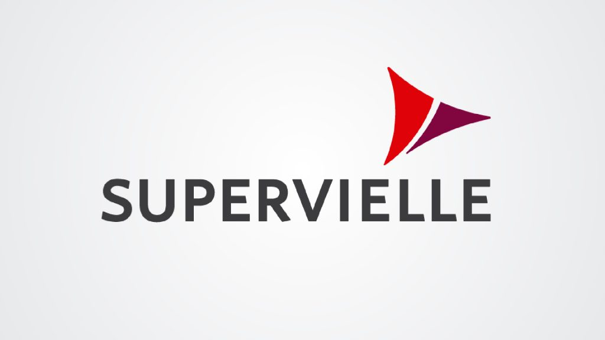

Financiación

Leasing Supervielle
Es una herramienta de financiación que está destinada a la adquisición de 0 km.
Beneficios:
- Posibilita financiar hasta el 100% del auto, dependiendo de cuáles sean sus ingresos, evitando un desembolso inicial importante y del IVA sobre la compra del auto. La operación de leasing permite liberar fondos, optimizando el manejo del capital de trabajo de la empresa (Sujeto a aprobación crediticia)
- Mejores índices de endeudamiento y liquidez, sin generar pasivos por la financiación obtenida
- Tiene como efecto una amortización acelerada del Bien
- El canon se considera como gasto y se deduce íntegramente del Impuesto a las Ganancias cuando el leasing es asimilado a una operación financiera
- Se evita que el Tomador acumule créditos fiscales de IVA
- Los Bienes obtenidos a través de un leasing no están alcanzados por Ganancia Mínima Presunta
Para saber más sobre esta financiación consultanos
Prestamo Personal
Para comprar tu auto en Quilmes Cars, te ofrecemos préstamos de hasta $ 1.400.000. Y si cobrás tu sueldo en Galicia, te mejoramos aún más la tasa
Con un plazo hasta 72 meses y podés pagar tu primera cuota hasta los 45 días
La acreditación del préstamo personal es automática y lo podés cancelar parcial o totalmente en cualquier momento
Para saber más sobre esta financiación consultanos
Prestamo Prendario
La forma más utilizada para financiar tu auto 0 km o Usado de hasta 10 años de antigüedad, con mínimos requisitos
Podés financiar la compra de tu auto a tasa fija y en pesos
El préstamo es proporcionado sobre la garantía del auto que deseas adquirir, por eso es de fácil otorgamiento
Podés financiar hasta el 95% del valor de tu 0 Km y en vehículos Usados dependiendo la antigüedad del vehículo
Con plazos flexibles de hasta 60 meses con tasa fija, hasta 48 meses para crédito UVA y la posibilidad de debitarlo automáticamente de tu cuenta
Es accesible para personas bancarizadas y no bancarizadas
Para saber más sobre esta financiación consultanos